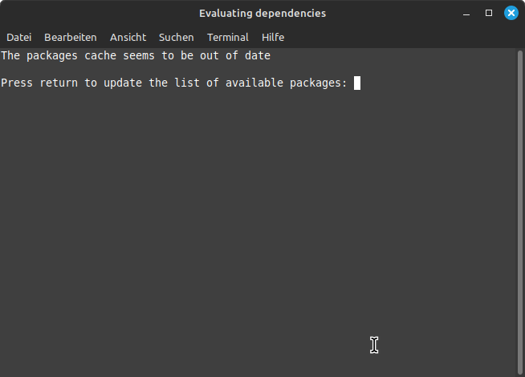
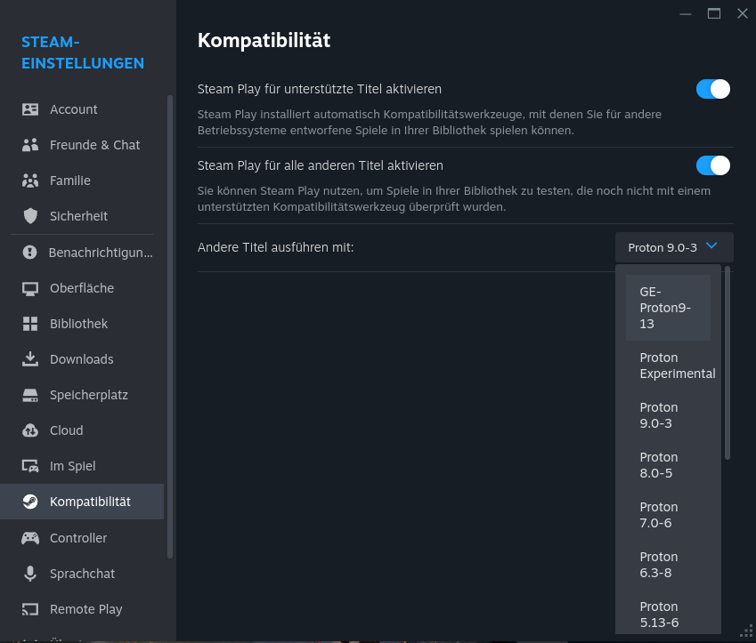
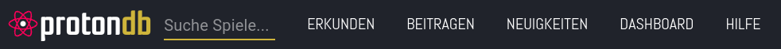
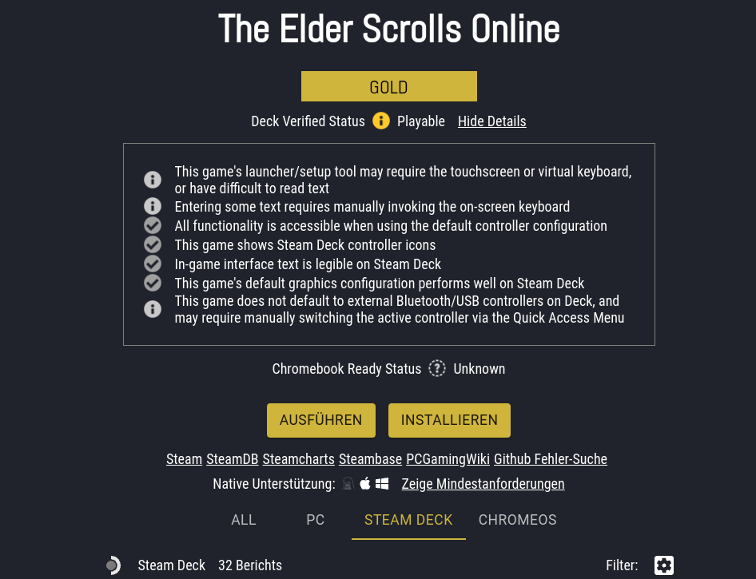
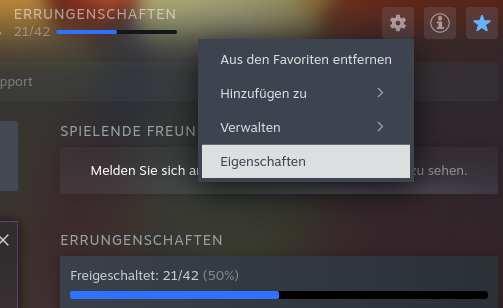
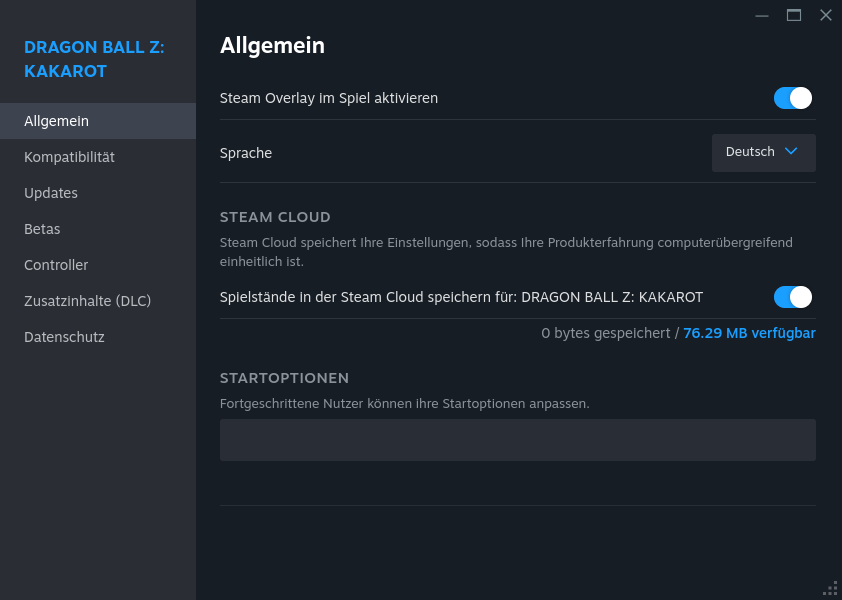
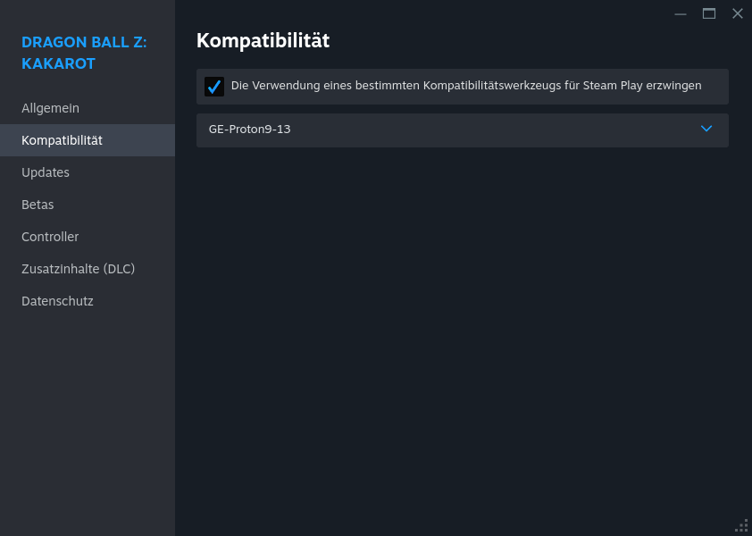

🎮 Steam – Deine Spielebibliothek auf Linux
Steam ist die Standard-Plattform für PC-Gaming auf Linux. Mit nativer Linux-Unterstützung und Proton kannst du deine komplette Spielebibliothek spielen – von indie Titeln bis zu aktuellen Blockbustern.
Installation
Es gibt viele Möglichkeiten, Steam zu installieren. Empfohlen wird die offizielle .deb-Datei von Valve, da diese am zuverlässigsten funktioniert.
Die richtige Installation
Lade die offizielle .deb-Datei von store.steampowered.com herunter. Du solltest die Datei steam_latest.deb erhalten.
Installationsschritte:
- Öffne deinen Dateimanager und gehe zum Download-Ordner
- Mache einen Rechtsklick auf eine freie Stelle und wähle „Terminal öffnen"
- Tippe folgenden Befehl ein:
sudo apt install ./steam_latest.deb -y - Bestätige mit ENTER und gebe dein Passwort ein
- Beim ersten Start werden weitere Pakete installiert – bitte alle mit „J" oder „Y" bestätigen!

⚠️ Installationen zu vermeiden
Es gibt zwar andere Möglichkeiten, Steam zu installieren (Flatpak, Snap, Anwendungsverwaltung), allerdings führen diese häufiger zu Problemen mit Login, Grafik oder Spielstart. Nutze deshalb wenn möglich immer die offizielle .deb-Installation von Valve.
Konfiguration
Steam Play & Proton aktivieren
Gehe zu Steam > Einstellungen > Kompatibilität und aktiviere beide Schalter:
- „Steam Play für unterstützte Titel"
- „Steam Play für alle anderen Titel verwenden (mit Tools wie Proton)"
Wähle eine Proton-Version aus, die global für alle Spiele verwendet werden soll. Starte Steam danach neu – danach ist alles bereit!

ProtonDB – Dein bester Freund
Bevor du ein Spiel kaufst oder spielst, solltest du auf ProtonDB nachschauen, ob es auf Linux läuft. Dort findest du:
- Kompatibilitäts-Status (Läuft/Funktioniert mit Fixes/Inkompatibel)
- Erfahrungen der Community
- Spezifische Fixes und Startoptionen für jedes Spiel


Individuelle Spiel-Konfiguration
Für einzelne Spiele kannst du unterschiedliche Proton-Versionen nutzen. So geht's:

Mache einen Rechtsklick auf das Spiel in deiner Bibliothek und wähle „Eigenschaften".

Im Reiter „Allgemein" kannst du Startoptionen eingeben (falls von ProtonDB empfohlen).

Im Reiter „Kompatibilität" kannst du eine spezifische Proton-Version für dieses Spiel auswählen.
Tipps & Tricks
Proton-GE verwenden
Die Community empfiehlt oft Proton-GE statt der Standard-Proton-Versionen. Proton-GE ist eine Community-Version mit zusätzlichen Verbesserungen und Fixes. Mit dem Tool Proton-Up-Qt kannst du Proton-GE einfach installieren und verwalten.
Häufige Probleme beheben
Falls Spiele nicht starten oder Probleme haben, sind oft diese Fehlerquellen der Grund:
- Falscher Grafikkartentreiber – Stelle sicher, dass du den richtigen Treiber installiert hast (NVIDIA oder AMD)
- Veraltete Abhängigkeiten – Aktualisiere dein System:
sudo apt update && sudo apt upgrade - Falsche Proton-Version – Versuche eine andere Version oder Proton-GE
- Cache leeren – Manchmal hilft es, den Proton-Cache zu löschen und Steam neu zu starten
Weitere Ressourcen
- ProtonDB – Kompatibilitäts-Datenbank für Spiele
- Proton-GE auf GitHub – Community-Version von Proton
- Linux Guides Forum – Hilfe von der Community